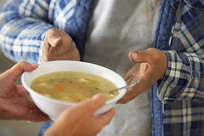
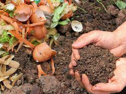

consumo sustentavel e meio ambiente
Sobre nós:
Recursos naturais são finitos, ou seja em determinado momento vão acabar, este conceito trouxe uma nova forma de desenvolvimento que leva em conta o meio ambiente, ele sugere, qualidade em vez de quantidade, com a redução do uso de matérias-primas e produtos e o aumento da reutilização e da reciclagem. Muitos ja pensaram nisso, tanto que existem as ODS, uma agenda mundial adotada durante a Cúpula das Nações Unidas sobre o Desenvolvimento Sustentável em setembro de 2015, composta por 17 objetivos e 169 metas a serem atingidos até 2030. Mas nossa organização ja esta agindo baseada nas ODS, de numero 11 e 12, que focam em comunidades sustentáveis e consumo e produção responsáveis. Por isso, junte-se a nós e venha fazer a diferença você também!
Nossos projetos
O instituto "Fazer o bem" surgiu atraves de uma grande vontade de fazer a diferença no meio ambiente e na vida pessoas,ao fazer uma análise, notamos problemas em algumas regiões de São paulo, problemas esses que nos levaram adaptar as melhores soluções possiveis, veja a abaixo, nossos projetos.
horta comunitaria

A presença de uma horta comunitária para a comunidade garante às famílias uma alimentação melhor, criando hábitos saudáveis e, consequentemente, uma qualidade de vida melhor. Além desses benefícios, a horta comunitária também pode ser uma fonte de atividade física e de lazer. Em alguns casos, ela ajuda a solucionar problemas ambientais e sanitários, ocupando terrenos abandonados.
Despoluição da billings

Localizada na região metropolitana de São Paulo, a represa Billings com 106,6 km² de extensão e armazenamento de 995 milhões de m³ de água, a Billings tem capacidade equivalente a todo sistema Cantareira, alimentado por seis represas. De acordo com os pesquisadores, a piora da qualidade nos últimos anos se deve a uma combinação de estiagem com crescimento de comunidades no entorno da Billings, que despejam esgoto clandestino.
Sopa amiga
 Ao fazer uma pesquisa extensa, tanto em feiras livres como
centro de distribuições de alimentos - CEASA, notamos o número
de alimentos desperdiçados nos finais de feiras livres de
São Paulo. De acordo com o jornal da universidade Unesp,
mediante as 942 feiras livres da cidade de São Paulo, há
grande desperdício de alimentos em decorrência de problemas
educacionais relacionados ao consumo, produção e aproveitamento
responsável de alimentos, em suma folhagens.
Assim, precisamos pensar em como podemos destinar esses alimentos.
E para que esses alimentos não sejam descartados, o Centro implantou o programa Sopa
Amiga, uma alternativa que permite o acesso de famílias recifenses de baixa renda a
refeições saudáveis e nutritivas.Funcionando a partir da distribuição de sopa para
associações carentes e famílias de baixa renda, o programa beneficia cerca de 13,5 mil
famílias, servindo em média 16,5 mil pratos de sopa e 10 mil pães semanais.
A produção da sopa é feita de forma diária e a entrega dos produtos se dá por meio de rodízio
para associações da Região Metropolitana do Recife. Por dia são produzidos 500 quilos de
sopa, proporcionando um quilo de sopa por dia e quatro pães para cada família contemplada.
Adubo sustentavel
Os produtos que não são aproveitados no programa Sopa Amiga viram adubo e beneficiam, além dos produtores que atuam no Ceasa, agricultores familiares. De acordo com o site Folhito, os benefícios do adubo orgânico ajuda no aumenta a rigidez dos tecidos e a resistência das plantas às pragas e moléstias e também favorece o desenvolvimento do sistema radicular, que deve ser fornecido em uma relação adequada com o nitrogênio para garantir um perfeito equilíbrio entre crescimento, produção e qualidade. Assim, nenhuma parte do alimento é desperdiçada e fazemos o melhor para as plantas.